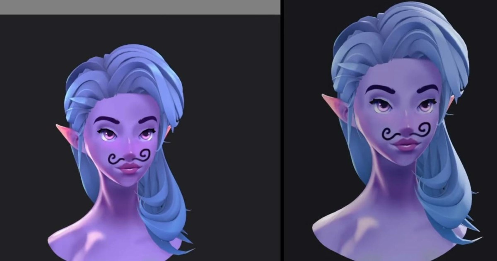

01
BLENDER / TEXTURE
SOURCE VISUAL
· Local visual evidence · 點圖開啟原始來源
來源
MadCanvas：Blender × Krita Live Texture Painting
把 3D viewport paint-over 與 Krita 手繪投射接成同一條工作流。

Texture ★★★★★
完整分析
Texture Workflow
MadCanvas 建立 Blender 與 Krita 的 live-link，能從 Krita 控制 Blender viewport、直接 paint-over，再把結果投射回模型。
Production Delta
把 stylized hand-paint 的 3D↔2D 往返壓縮成同一工作流，對需要精準視角投射與手繪修圖的角色、場景貼圖特別有價值。
導入測試
應測 seam、投射遮擋、UDIM、多材質與高解析貼圖返修，並確認 round-trip 是否保留可編輯性。